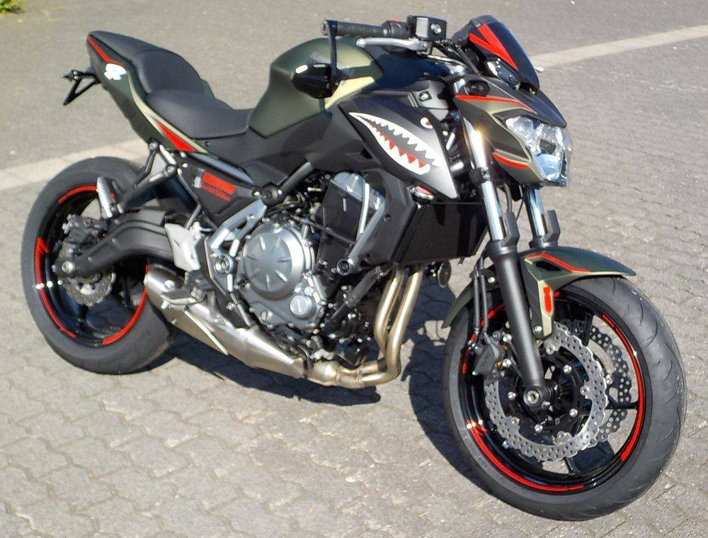
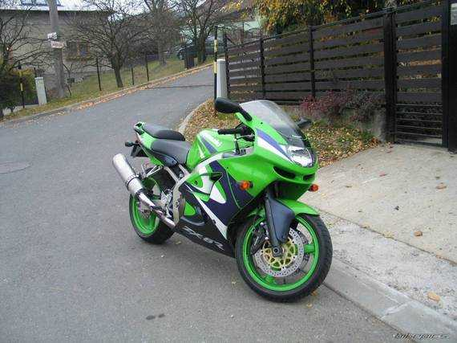
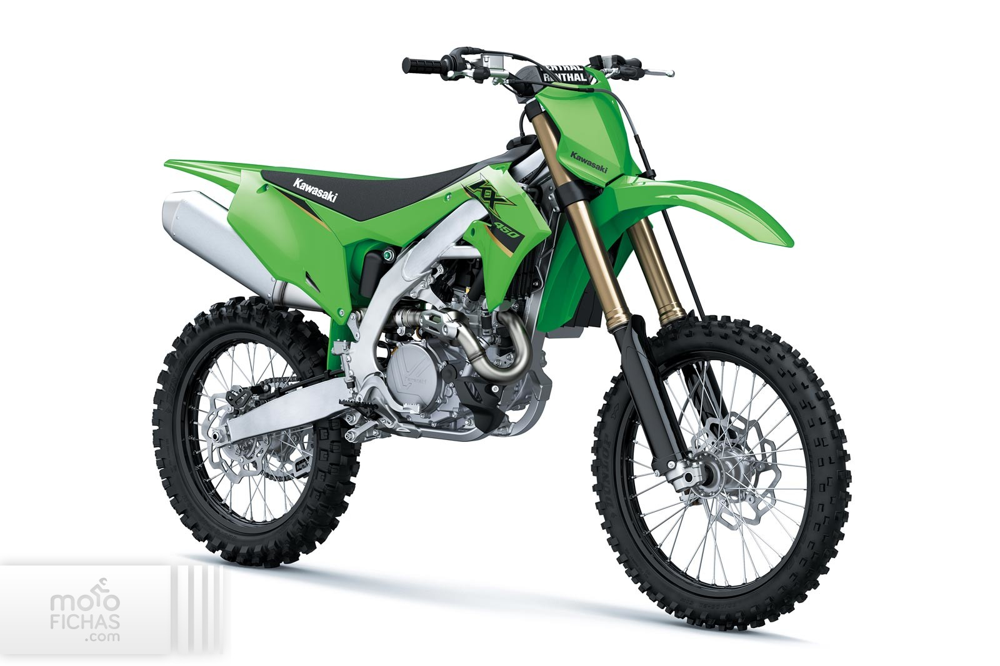

|

Kawasaki Z650
Állapot: Felújított (tuningolt)
Típus: Naked bike Évjárat: 2020 Okmányok: Külföldi okmányok Műszaki adatok: Tovább a weboldalra Vételár: 2,750,000 Ft |

Kawasaki ZX6R
Állapot: Kímélt
Típus: Sport/Gyorsasági Évjárat: 1999 Okmányok: Magyar okmányok Műszaki adatok: Tovább a weboldalra Vételár: 1,500,000 Ft |

Kawasaki KX450 MY 2020
Állapot: Kitűnő (Gyári)
Típus: Sport/Gyorsasági Évjárat: 2020 Okmányok: okmányok nélkül Műszaki adatok: Tovább a weboldalra Vételár: 2,240,600 Ft |